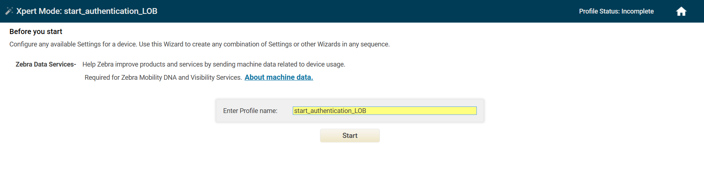
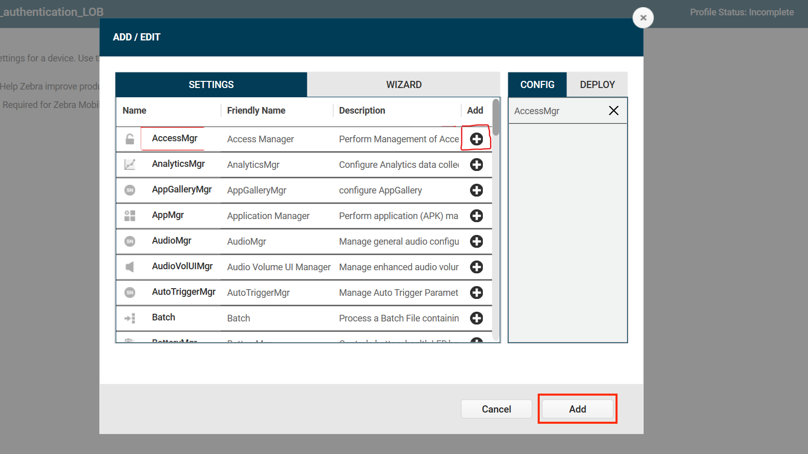
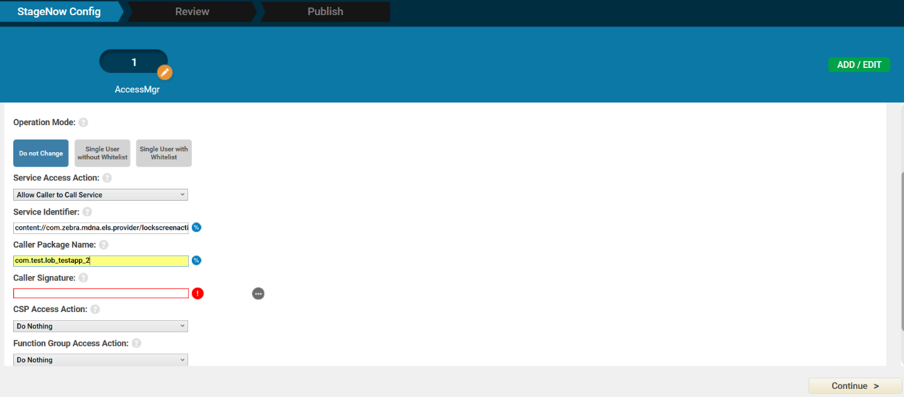

Overview
This guide discusses the APIs provided by Identity Guardian, which uses a content provider interface to securely retrieve and share data between applications. The content provider URI is composed of four distinct parts: <Scheme:>//<Authority>/<API>/<Data>
- Scheme - Identifies the URI accessing a content source, typically represented as:
content://. - Authority - The name of the provider authority, usually in the forma
packagename.provider. - API - The path that differentiates the content data.
- Data - The key that points to specific data in the path.
Example of content provider URI: content://com.zebra.mdna.els.provider/<API>/<data>
Replace <API> and <data> with the appropriate string for specific use cases.
APIs
| API Name | Description | Usage Context |
|---|---|---|
| Get Current User Session | Retrieves information about the current user session. | Applicable when Identity Guardian is used for user authentication at either the device or application level. |
| Get Current User Session (Legacy) | Retrieves information about the current user session. | Applicable when Identity Guardian is used for user authentication at either the device or application level. |
| Get Previous User Session | Retrieves information about the previous user session. | Applicable when Identity Guardian is used for user authentication at either the device or application level. |
| Set Current Session | Notifies Identity Guardian of user check-in/check-out events when the Identity Guardian lock screen is not utilized. | Applicable for organizations using custom blocking screen apps for device access, aiming to track user activity across Zebra apps. |
| Authenticate User | Initiates Identity Guardian’s user authentication screen. | Used when Identity Guardian is employed for application-level authentication instead of device-level. |
| Get Authentication Status | Retrieves information about the Identity Guardian lock screen state. | Applicable when Identity Guardian is used for user authentication at either the device or application level. |
| Register for Notifications | Enables applications to receive notifications of user changes. | Applicable when Identity Guardian is used for user authentication at either the device or application level. |
| User Session Logout | Allows applications to clear the current user session and lock the screen. | Applicable when Identity Guardian is used for user authentication at either the device or application level. |
Requirements
In the AndroidManifest.xml of your application, add the required permission and the
<queries>tag, which defines the package name for Identity Guardian:<uses-permission android:name="com.zebra.mdna.els.permission.PROVIDER" /> <queries> <package android:name="com.zebra.mdna.els" /> </queries>To use Identity Guardian APIs, they need to be allowlisted within your application.
For security purposes, your app must be included on Identity Guardian's permitted app allowlist using AccessMgr CSP from Zebra Device Manager (ZDM) to enable utilization of the APIs. Create a profile using StageNow to deploy the configuration to allowlist your app. Set the following parameters:
- Operation Mode: "Single User without Whitelist"
- Service Access Action: "Allow Caller to Call Service"
- Service Identifier: <delegation scope of the API category>
- Specify Caller Package Name: <enter app package name, e.g.: com.company.appname>
- Caller Signature: <select signature file that contains the app certificate>
See Caller Signature in the Access Mgr CSP documentation for information on generating a signature file. After creating the StageNow profile, use StageNow to scan the barcode generated or deploy the XML file via Enterprise Mobility Management (EMM) software.
Get User Session
Retrieve session data associated with the current or previous user. When the device is in a locked state, these APIs are functional if the lock state is activated by specific device system events, not by an application triggering the lock state. The lock screen can be activated by the following device system events, based on Authentication Configuration:
- Unlocking the device (OnUnlock)
- Rebooting the device (OnReboot)
- Connecting the device to AC power (OnACPowerConnected)
- Disconnecting the device from AC power (OnACPowerDisconnected)
An application can activate the lock screen by invoking Start Authentication.
Get Current User Session
Description: This API uses a content URI to access data from the current user session. It retrieves the cursor’s extras and extracts the result string from the extras bundle. If the result string is not empty, it should be parsed into a JSON object.
Note: Zebra recommends using this API instead of the Get Current User Session (Legacy) API.
Content URI: content://com.zebra.mdna.els.provider/v2/currentsession
Input Keys: None
Response: A Cursor object in JSON string format that contains the required bundle. A null or empty cursor indicates that no user is signed into the device.
| Key | Type | Description/Value |
|---|---|---|
| authenticationFactors | JSON object | [Returns authentication factor details. See Sample Authentication Results below.] |
| factor | string | Specifies the type of authentication used: • PASSCODE • FACE • SSO • ADMINBYPASS • NONE - Applies to "PRIMARYSECONDARYFACTOR1" and "FALLBACKFACTOR1" FactorType • NO_COMPARISON - Applies to "PRIMARYPRIMARYFACTOR" FactorType |
| Factor Type | String | Defines the level of authentication used: • PRIMARYPRIMARYFACTOR - Primary authentication • PRIMARYSECONDARYFACTOR1 - Secondary authentication • FALLBACKFACTOR1 -Fallback authentication |
| Status | string | Current authentication status: • EXECUTED - Successful authentication • EXECUTED BUT NOT CONSIDERED - Primary authentication was successful but secondary authentication failed • TIMEDOUT - The authentication request timed out • USERSKIPPED -The user bypassed the SSO login prompt by pressing the back button, resulting to fallback authentication |
| schemaVersion | string | [Version of the authentication factors schema] |
| enrollmentCreatedOn | string | [Timestamp when the barcode was created, in EPOCH time, e.g., 1737983880029] |
| enrollmentCreatedOnDeviceModel | string | [Device model on which the barcode was created, e.g., TC58] |
| enrollmentCreatedOnDeviceModel | string | [Serial number of device where the barcode was created] |
| enrollmentExpiryDate | string | [Expiration date of the barcode, in EPOCH time, e.g., 1738156680000] |
| enrollmentId | string | Unique identifier for the barcode, e.g., 1237983906027D4BA34E |
| enrollmentType | string | Type of enrollment, e.g., BARCODE |
| securityTypes | string | Types of security mechanism in use: • FACE • PASSCODE • SSO |
| storageType | string | Type of storage used for authentication: • BARCODE - For shared devices • DEVICE - For personal devices |
| errorCode | integer | Status code indicating success or failure: • 0 -Success • 1 - Failure |
| eventType | string | Specifies the event that occurred: • Login • Logout |
| lockScreenEventType | string | Specifies the event that triggered the lock screen: • on_lock - The user locked the device. • manual_logout - The user manually signed out using the Sign out button in Identity Guardian • user_change - The user signed out and another user signed in. • onAcPowerConnect -The device was connected to a power source. • onACPowerDisconnect -The device was disconnected from a power source. |
| isSSOInformationAvailable | integer | Availability of single sign-on (SSO) data: • 1 - SSO information is available; ssoInformation can be parsed for details• 0 - SSO information is not available |
| userLoginTime | string | [Timestamp when user signed in, in EPOCH format, e.g., 1738247487590] |
| logoutReason | string | Specifies the event that triggered the user logout: • on_lock - The user locked the device. • manual_logout - The user manually signed out using the Sign out button in Identity Guardian • user_change - The user signed out and another user signed in. • onAcPowerConnect -The device was connected to a power source. • onACPowerDisconnect -The device was disconnected from a power source. |
| userLogoutTime | string | [Timestamp when user logged out in EPOCH format] |
| schemaVersion | string | [Version of the schema, e.g., 2.0] |
| ssoAccessToken | string | [Access token for Single Sign-On] |
| ssoDataReceivedFromIDP | string | [Data received from Identity Provider] |
| ssoIDToken | string | [Single Sign-On ID token] |
| ssoProvider | string | Single Sign-On provider in use: • PingId • Microsoft • OKTA |
| status | string | Indicates the API response outcome: • SUCCESS • FAILED |
| userId | string | Identifier for the user signed into the device, e.g., user1@zebra.com |
| userRole | string | [Role identifier based on data from the SSO provider] |
| userLoggedInState | string | User login status on the device: • 1 - User is signed in or has checked out the device, updating the userLoginTime • 0 - User is signed out or has checked in the device, updating the userLogoutTime |
Note: The following keys are returned in EPOCH date/time format: enrollmentCreatedOn, enrollmentExpiryDate and userLoginTime.
Example response for a user logged into the device:
{
"authenticationFactors":{
"factors":[
{
"factor":"PASSCODE",
"factorType":"PRIMARYPRIMARYFACTOR",
"status":"EXECUTED"
},
{
"factor":"SSO",
"factorType":"PRIMARYSECONDARYFACTOR1",
"status":"EXECUTED"
}
],
"schemaVersion":"1.0"
},
"enrollmentInformation":{
"enrollmentCreatedOn":"1737983880029",
"enrollmentCreatedOnDeviceModel":"TC58",
"enrollmentCreatedOnDeviceSerialNo":"",
"enrollmentExpiryDate":"1738156680000",
"enrollmentId":"1737983906027D4BA34E",
"enrollmentType":"BARCODE",
"securityTypes":"PASSCODE",
"storageType":"BARCODE"
},
"errorCode":0,
"eventType":"Login",
"lockScreenEventType":””
"isSSOInformationAvailable":1,
"logOutInformation":{
"logoutReason ":""
"userLogoutTime":""
},
"loginInformation":{
"userLoginTime":"1738247487590"
},
"schemaVersion":"2.0",
"ssoInformation":{
"ssoAccessToken":"",
"ssoDataReceivedFromIDP:"",
"ssoIDToken":"",
"ssoProvider":"Microsoft"
},
"status":"SUCCESS",
"userInformation":{
"userId":"user1@zebra.com",
"userRole":""
},
"userLoggedInState":"1"
}
Exceptions:
- NullPointerException – Returned if the URI or method is null
- IllegalArgumentException – Returned if the URI is not known
Sample Authentication Results
Examples of authentication results, demonstrating the success or failure of primary, secondary, and fallback methods, illustrating various scenarios and their outcomes:
Primary and Secondary Authentication Successful:
"factors": [ { "FactorType": "PRIMARYPRIMARYFACTOR", "Status": "EXECUTED" }, { "FactorType": "PRIMARYSECONDARYFACTOR1", "Status": "EXECUTED" } ],Primary Authentication Timed Out, Fallback Authentication Successful:
"factors": [ { "FactorType": "PRIMARYPRIMARYFACTOR", "Status": "TIMEDOUT" }, { "FactorType": "FALLBACKFACTOR1", "Status": "EXECUTED" } ],Primary Authentication Successful, Secondary and Fallback Authentication Timed Out:
"factors": [ { "FactorType": "PRIMARYPRIMARYFACTOR", "Status": "EXECUTED BUT NOT CONSIDERED" }, { "Factor":"PASSCODE" "FactorType": "PRIMARYSECONDARYFACTOR1", "Status": "TIMEDOUT" }, { "FactorType": "FALLBACKFACTOR1", "Status": "EXECUTED" } ],Primary Authentication Successful for SSO, Secondary Skipped by User, Fallback Authentication Successful:
"factors": [ { "FactorType": "PRIMARYPRIMARYFACTOR", "Factor":"SSO", "Status": "EXECUTED BUT NOT CONSIDERED" }, { "FactorType": "PRIMARYSECONDARYFACTOR1", "Status": "USERSKIPPED" }, { "FactorType": "FALLBACKFACTOR1", "Status": "EXECUTED" } ],
Get Current User Session (Legacy)
Description: This API uses a content URI to access data from the current user session. It retrieves the cursor’s extras and extracts the result string from the extras bundle. If the result string is not empty, it should be parsed into a JSON object.
Warning: This API is deprecated and will be removed in a future release. Zebra recommends to use the Get Current User Session API instead.
Content URI: content://com.zebra.mdna.els.provider/currentsession
Input Keys: None
Response: A Cursor object in JSON string format that contains the required bundle. A null or empty cursor indicates that no user is signed into the device.
| Key | Type | Description/Value |
|---|---|---|
| code | integer | Status code indicating success or failure: 0 - Success 1 - Failure |
| status | string | Indicates the API response outcome: SUCCESS FAILED |
| authenticationFactors | JSON object | [Returns authentication factor details. Sample Authentication Results below.] |
| schemaVersion | string | [Returns the version of the authentication factors schema] |
| factor | string | Specifies the type of authentication used: • PASSCODE • FACE • SSO • ADMINBYPASS • NONE - Applies to "PRIMARYSECONDARYFACTOR1" and "FALLBACKFACTOR1" FactorType • NO_COMPARISON - Applies to "PRIMARYPRIMARYFACTOR" FactorType |
| Factor Type | String | Defines the level of authentication used: • PRIMARYPRIMARYFACTOR - Primary authentication • PRIMARYSECONDARYFACTOR1 - Secondary authentication • FALLBACKFACTOR1 -Fallback authentication |
| Status | string | Current authentication status: • EXECUTED - Successful authentication • EXECUTED BUT NOT CONSIDERED - Primary authentication was successful but secondary authentication failed • TIMEDOUT - The authentication request timed out • USERSKIPPED -The user bypassed the SSO login prompt by pressing the back button, resulting to fallback authentication |
| eventType | string | Specifies the event that occurred: • Login • Logout |
| lockScreenEventType | string | Specifies the event that triggered the lock screen: • on_lock - The user locked the device. • manual_logout - The user manually signed out using the Sign out button in Identity Guardian • user_change - The user signed out and another user signed in. • onAcPowerConnect -The device was connected to a power source. • onACPowerDisconnect -The device was disconnected from a power source. |
| authenticationScheme | string | The authentication scheme used: • authenticationScheme1 • authenticationScheme2 • authenticationScheme3 • authenticationScheme4 |
| barcodeAuthenticatedOnDeviceSerialNo | string | [Serial number of device where barcode authentication occurred] |
| barcodeCreatedOn | string | [Timestamp when the barcode was created, in format yyyy-mm-dd hh:mm.sss+mmmm, e.g., 2025-01-27 18:48.029+0530] |
| barcodeCreatedOnDeviceModel | string | [Device model where the barcode was created, e.g., TC58] |
| barcodeCreatedOnDeviceSerialNo | string | [Serial number of device where the barcode was created] |
| barcodeExpiryDate | string | [Expiration date of the barcode, in format yyyy-mm-dd hh:mm, e.g., 29-01-2025 18:48] |
| barcodeId | string | [Unique identifier for the barcode, e.g., 1737983906027D4BA34E] |
| deviceModel | string | [Device model in use, e.g., TC58] |
| securityTypes | string | Type of security mechanism in use: • FACE • PASSCODE • SSO |
| ssoAccessToken | string | [Access token for Single Sign-On] |
| ssoData | string | [Data related to SSO] |
| ssoProvider | string | Single Sign-On provider in use: • PingId • Microsoft • OKTA |
| storageType | string | Type of storage used for authentication: • BARCODE - For shared devices • DEVICE - For personal devices |
| userId | string | Identifier for the user signed into the device, e.g., user1@zebra.com |
| userLoggedInState | string | Represents the user's login status on the device: • 1 - The user is signed in or has checked out the device, updating the userLoginTime • 0 - The user is signed out or has checked in the device, updating the userLogoutTime |
| userLoginTime | string | [Timestamp when user signed in format yyyy-mm-dd hh:mm.sss+mmmm, e.g. 2025-01-30 20:01.590+0530] |
| userLogoutTime | string | [Timestamp when user signed in format yyyy-mm-dd hh:mm.sss+mmmm] |
| logoutReason | string | Specifies the event that triggered the user logout: • on_lock - The user locked the device. • manual_logout - The user manually signed out using the Sign out button in Identity Guardian • user_change - The user signed out and another user signed in. • onAcPowerConnect -The device was connected to a power source. • onACPowerDisconnect -The device was disconnected from a power source. |
| userRole | string | [Role identifier based on data from the SSO provider] |
Note: The following keys are returned in date/time format of "yyyy-MM-dd HH:mm:ss": userLoginTime, userLogoutTime, and barcodeCreatedOn.
Example response for a user logged into the device:
{
"code": 0,
"status": "SUCCESS",
"userData": {
"authenticationFactors": {
"schemaVersion": "1.0",
"factors": [
{
"factor": "PASSCODE",
"factorType": "PRIMARYPRIMARYFACTOR",
"status": "EXECUTED"
},
{
"factor": "SSO",
"factorType": "PRIMARYSECONDARYFACTOR1",
"status": "EXECUTED"
}
],
"eventType": "CurrentUser"
"lockScreenEventType":””
},
"authenticationScheme": "authenticationScheme1",
"barcodeAuthenticatedOnDeviceSerialNo": "",
"barcodeCreatedOn": "2025-01-27 18:48.029+0530",
"barcodeCreatedOnDeviceModel": "TC58",
"barcodeCreatedOnDeviceSerialNo": "",
"barcodeExpiryDate": "29-01-2025 18:48",
"barcodeId": "1737983906027D4BA34E",
"deviceModel": "TC58",
"securityTypes": "PASSCODE",
"ssoAccessToken": ".",
"ssoData": "",
"ssoProvider": "Microsoft",
"storageType": "BARCODE",
"userId": "user1@zebra.com",
"userLoggedInState": "1",
"userLoginTime": "2025-01-30 20:01.590+0530",
"userLogoutTime": "",
"logoutReason ":""
"userRole": ""
}
}
Exceptions:
- NullPointerException – Returned if the URI or method is null
- IllegalArgumentException – Returned if the URI is not known
Sample Authentication Results
Examples of authentication results, demonstrating the success or failure of primary, secondary, and fallback methods, illustrating various scenarios and their outcomes:
Primary and Secondary Authentication Successful:
"factors": [ { "FactorType": "PRIMARYPRIMARYFACTOR", "Status": "EXECUTED" }, { "FactorType": "PRIMARYSECONDARYFACTOR1", "Status": "EXECUTED" } ],Primary Authentication Timed Out, Fallback Authentication Successful:
"factors": [ { "FactorType": "PRIMARYPRIMARYFACTOR", "Status": "TIMEDOUT" }, { "FactorType": "FALLBACKFACTOR1", "Status": "EXECUTED" } ],Primary Authentication Successful, Secondary and Fallback Authentication Timed Out:
"factors": [ { "FactorType": "PRIMARYPRIMARYFACTOR", "Status": "EXECUTED BUT NOT CONSIDERED" }, { "Factor":"PASSCODE" "FactorType": "PRIMARYSECONDARYFACTOR1", "Status": "TIMEDOUT" }, { "FactorType": "FALLBACKFACTOR1", "Status": "EXECUTED" } ],Primary Authentication Successful for SSO, Secondary Skipped by User, Fallback Authentication Successful:
"factors": [ { "FactorType": "PRIMARYPRIMARYFACTOR", "Factor":"SSO", "Status": "EXECUTED BUT NOT CONSIDERED" }, { "FactorType": "PRIMARYSECONDARYFACTOR1", "Status": "USERSKIPPED" }, { "FactorType": "FALLBACKFACTOR1", "Status": "EXECUTED" } ],
Sample Code
To retrieve current user session data, follow the example below:
URI Declaration: The URI_USER_CURRENT_SESSION is a static final URI that interacts with a content provider managing the current user session data. It is used to query the content provider for the current session data associated with the user.
public static final Uri URI_USER_CURRENT_SESSION = Uri.parse("content://com.zebra.mdna.els.provider/currentsession");
Method to Get Current Session Data: This method demonstrates how to fetch current user session data from the content provider and parse it into a JSON object.
public void fetchCurrentUserSessionData() {
ContentResolver cr = getContentResolver(); // Get the content resolver to query the provider
Cursor cursor = cr.query(URI_USER_CURRENT_SESSION, null, null, null, null); // Query the provider using the URI
try {
if (cursor != null) { // Check if cursor is not null
Log.i(TAG, "Cursor info" + cursor.getExtras()); // Log cursor information
Bundle extras = cursor.getExtras(); // Get any extras data from the cursor
if (extras != null) {
String result = extras.getString("RESULT", ""); // Retrieve the "RESULT" data from the extras
Log.i(TAG, "getDataForCurrentUser: key is " + result); // Log the result string
if (!result.isEmpty()) { // Proceed if the result is not empty
try {
JSONObject resultObject = new JSONObject(result); // Parse the result string into a JSON object
Log.i(TAG, "Json Result : " + resultObject.toString(1)); // Log the formatted JSON result
} catch (Exception e) { // Catch any exceptions that occur during JSON parsing
Log.i(TAG, "Exception in parsing " + e.getMessage()); // Log parsing exceptions
}
}
}
}
} catch (Exception e) { // Catch any other exceptions during the query process
Log.e(TAG, "Exception in getDataForCurrentUser " + e.getMessage()); // Log the exception
} finally {
if (cursor != null) { // Ensure the cursor is closed to avoid memory leaks
cursor.close();
}
}
}
Get Previous User Session
Description: This API uses a content URI to access data from the previous user session. It retrieves the cursor’s extras and extracts the result string from the extras bundle. If the result string is not empty, it should be parsed into a JSON object.
Content URI: content://com.zebra.mdna.els.provider/previoussession
Input Keys: None
Response: A Cursor object in JSON string format that contains the required bundle. A null or empty cursor indicates that no user is signed into the device.
| Key | Type | Description/Value |
|---|---|---|
| code | integer | Status code indicating success or failure: 0 - Success 1 - Failure |
| status | string | Indicates the API response outcome: SUCCESS FAILED |
| authenticationFactors.schemaVersion | JSON object | [Returns authentication factor details. Sample Authentication Results below.] |
| schemaVersion | string | [Returns the version of the authentication factors schema] |
| factor | string | Specifies the type of authentication used: • PASSCODE • FACE • SSO • ADMINBYPASS • NONE - Applies to "PRIMARYSECONDARYFACTOR1" and "FALLBACKFACTOR1" FactorType • NO_COMPARISON - Applies to "PRIMARYPRIMARYFACTOR" FactorType |
| Factor Type | String | Defines the level of authentication used: • PRIMARYPRIMARYFACTOR - Primary authentication • PRIMARYSECONDARYFACTOR1 - Secondary authentication • FALLBACKFACTOR1 -Fallback authentication |
| status | string | Current authentication status: • EXECUTED - Successful authentication • EXECUTED BUT NOT CONSIDERED - Primary authentication was successful but secondary authentication failed • TIMEDOUT - The authentication request timed out • USERSKIPPED -The user bypassed the SSO login prompt by pressing the back button, resulting to fallback authentication |
| eventType | string | Identifies the user who was authenticated: • PreviousUser - The user from the previous session. • CurrentUser - The user from the current session. |
| barcodeAuthenticatedOnDeviceSerialNo | string | [Serial number of device where barcode authentication occurred] |
| barcodeCreatedOn | string | [Timestamp when the barcode was created, in format yyyy-mm-dd hh:mm.sss+mmmm, e.g., 2025-01-27 18:48.029+0530] |
| barcodeCreatedOnDeviceModel | string | [Device model where the barcode was created, e.g., TC58] |
| barcodeCreatedOnDeviceSerialNo | string | [Serial number of device where the barcode was created] |
| barcodeExpiryDate | string | [Expiration date of the barcode, in format yyyy-mm-dd hh:mm, e.g., 29-01-2025 18:48] |
| barcodeId | string | [Unique identifier for the barcode, e.g., 1737983906027D4BA34E] |
| deviceModel | string | [Device model in use, e.g., TC58] |
| logoutReason | string | Specifies the event that triggered the user logout: • on_lock - The user locked the device. • manual_logout - The user manually signed out using the Sign out button in Identity Guardian • user_change - The user signed out and another user signed in. • onAcPowerConnect -The device connected to a power source. • onACPowerDisconnect -The device disconnected from a power source. |
| securityTypes | string | Type of security mechanism in use: • FACE • PASSCODE • SSO |
| ssoAccessToken | string | [Access token for Single Sign-On] |
| ssoData | string | [Data related to SSO] |
| ssoProvider | string | Single Sign-On provider in use: • PingId • Microsoft • OKTA |
| storageType | string | Type of storage used for authentication: • BARCODE - For shared devices • DEVICE - For personal devices |
| userId | string | Identifier for the user signed into the device, e.g., user1@zebra.com |
| userLoggedInState | string | Represents the user's login status on the device: • 1 - The user is signed in or has checked out the device, updating the userLoginTime • 0 - The user is signed out or has checked in the device, updating the userLogoutTime |
| userLoginTime | string | [Timestamp when user signed in format yyyy-mm-dd hh:mm.sss+mmmm, e.g. 2025-01-30 20:01.590+0530] |
| userLogoutTime | string | [Timestamp when user signed in format yyyy-mm-dd hh:mm.sss+mmmm] |
| userRole | string | [Role identifier based on data from the SSO provider] |
Example Response:
{
"code":0,
"status":"SUCCESS",
"userData":{
"authenticationFactors":"{\"schemaVersion\":\"1.0\",\"factors\":[{\"factor\":\"PASSCODE\",\"factorType\":\"PRIMARYPRIMARYFACTOR\",\"status\":\"EXECUTED\"},{\"factor\":\"SSO\",\"factorType\":\"PRIMARYSECONDARYFACTOR1\",\"status\":\"EXECUTED\"}],\"eventType\":\"PreviousUser\"}",
"barcodeAuthenticatedOnDeviceSerialNo":"",
"barcodeCreatedOn":"2025-01-27 18:48.029+0530",
"barcodeCreatedOnDeviceModel":"TC58",
"barcodeCreatedOnDeviceSerialNo":"",
"barcodeExpiryDate":"29-01-2025 18:48",
"barcodeId":"1737983906027D4BA34E",
"deviceModel":"TC58",
"logoutReason":"on_device_manual_checkin",
"securityTypes":"PASSCODE",
"ssoAccessToken":"eyJ0eXAiOiJKV1QiLCJub25jZSI6IkdINVpKTXhFd0Flejg3OHJqdURiVHlVWmpnWmxrSDJac2FueTRzZkN6SFEiLCJhbGciOiJSUzI1NiIsIng1dCI6IllUY2VPNUlKeXlxUjZqekRTNWlBYnBlNDJKdyIsImtpZCI6IllUY2VPNUlKeXlxUjZqekRTNWlBYnBlNDJKdyJ9. ",
"ssoData":"{\"aud\":\"f46bf88f-e5a7-441d-bc19-096b2dacdde2\",\"iss\":\"https:\/\/login.microsoftonline.com\/fcefc790-f4eb-456b-86fa-0e8153bac15c\/v2.0\",\"iat\":1738296787,\"nbf\":1738296787,\"exp\":1738300687,\"aio\":\"AWQAm\/8ZAAAAmCTlSl+wuMlynM47fKj7nL1+7BZSgS0pxjxHji+gi4gL3xbx3mPoK2VQ7UzPwLhZgSzetL8cWPT48HIT85s5wSmLWHt6hLuGKzw9JQdnRkYlKezBcT5IGiF3717ocYRE\",\"name\":\"test.user\",\"oid\":\"d2da2d27-ae35-43eb-b3a2-b398890b50d9\",\"preferred_username\":\"test.user@zebra.com\",\"rh\":\"1.Ab4AkMfv_Ov0a0WG-g6BU7rBXI_4a_Sn5R1EvBkJay2s3eK-AL--AA.\",\"sid\":\"0013de09-e09d-39a2-c5ef-060305d43ea1\",\"sub\":\"E7p4Dj1EjzcGFiSF327esrZZBs66CRR45Lr-qH9tcAw\",\"tid\":\"fcefc790-f4eb-456b-86fa-0e8153bac15c\",\"uti\":\"MypFFrvIQEajJLVv3TKCAA\",\"ver\":\"2.0\"}",
"ssoProvider":"Microsoft",
"storageType":"BARCODE",
"userId":"test.user@zebra.com",
"userLoggedInState":"0",
"userLoginTime":"2025-01-31 09:48.446+0530",
"userLogoutTime":"2025-01-31 09:48.934+0530",
"userRole":""
}
}
Sample Code
To retrieve previous user session data, follow the example below:
URI Declaration: The URI_PREVIOUS_USER_SESSION is a static final URI that interacts with a content provider managing the previous user session data. It is used to query the content provider for the previous session data associated with the user.
public static final Uri URI_PREVIOUS_USER_SESSION = Uri.parse("content://com.zebra.mdna.els.provider/previoussession");
Method to Get Current Session Data: This method demonstrates how to fetch previous user session data from the content provider and parse it into a JSON object.
public void fetchPreviousUserSessionData() {
ContentResolver cr = getContentResolver();
Cursor cursor = cr.query(URI_PREVIOUS_USER_SESSION, null, null, null, null);
try {
if (cursor != null) {
Log.i(TAG, "Previous user Cursor info" + cursor.getExtras());
Bundle extras = cursor.getExtras();
if (extras != null) {
String result = extras.getString("RESULT", "");
Log.i(TAG, "getDataForPreviousUser: key is " + result);
if (!result.isEmpty()) {
try {
JSONObject resultObject = new JSONObject(result);
Log.i(TAG, "Json Result : " + resultObject.toString(1));
} catch (Exception e) {
Log.i(TAG, "Exception in parsing " + e.getMessage());
}
}
}
}
} catch (Exception e) {
Log.e(TAG, "Exception in getDataForPreviousUser " + e.getMessage());
} finally {
if (cursor != null) {
cursor.close();
}
}
}
Sample Authentication Results
Examples of authentication results, demonstrating the success or failure of primary, secondary, and fallback methods, illustrating various scenarios and their outcomes:
Primary and Secondary Authentication Successful:
"factors": [ { "FactorType": "PRIMARYPRIMARYFACTOR", "Status": "EXECUTED" }, { "FactorType": "PRIMARYSECONDARYFACTOR1", "Status": "EXECUTED" } ],Primary Authentication Timed Out, Fallback Authentication Successful:
"factors": [ { "FactorType": "PRIMARYPRIMARYFACTOR", "Status": "TIMEDOUT" }, { "FactorType": "FALLBACKFACTOR1", "Status": "EXECUTED" } ],Primary Authentication Successful, Secondary and Fallback Authentication Timed Out:
"factors": [ { "FactorType": "PRIMARYPRIMARYFACTOR", "Status": "EXECUTED BUT NOT CONSIDERED" }, { "Factor":"PASSCODE" "FactorType": "PRIMARYSECONDARYFACTOR1", "Status": "TIMEDOUT" }, { "FactorType": "FALLBACKFACTOR1", "Status": "EXECUTED" } ],Primary Authentication Successful for SSO, Secondary Skipped by User, Fallback Authentication Successful:
"factors": [ { "FactorType": "PRIMARYPRIMARYFACTOR", "Factor":"SSO", "Status": "EXECUTED BUT NOT CONSIDERED" }, { "FactorType": "PRIMARYSECONDARYFACTOR1", "Status": "USERSKIPPED" }, { "FactorType": "FALLBACKFACTOR1", "Status": "EXECUTED" } ],
Set User Session
General Sample code:
Uri URI_USER_CURRENT_SESSION = Uri.parse("content://com.zebra.mdna.els.provider/currentsession");
Cursor cursor = cr.query(URI_USER_CURRENT_SESSION, null, null, null, null);
Sample code for using Proxy Mode to send sign-in and sign-out notifications to Identity Guardian:
public void getDataForCurrentUser() {
ContentResolver contentResolver = getContentResolver();
Uri uri = Uri.parse("content://com.zebra.mdna.els.provider/");
String METHOD_NAME = "currentsession";
Bundle bundle = new Bundle();
bundle.putString("user_id", "pd3445");
bundle.putBoolean("signed_in_state", true);
bundle.putString("signin_time", getCurrentDateAndTimeFormat(System.currentTimeMillis()));
bundle.putString("signout_time", “”);
Bundle response = contentResolver.call(uri,METHOD_NAME,null,bundle);
if (response != null && response.containsKey("RESULT"))
{
Log.i(TAG, response.getString("RESULT"));
}
}
Authenticate User
Description: This API uses a content URI to launches Identity Guardian and display it over any open apps, restricting device access until the user successfully logs in or authenticates to the device.
Content URI: content://com.zebra.mdna.els.provider/lockscreenaction/startauthentication
Sample code:
String BASE_URI = "content://com.zebra.mdna.els.provider/";
private final String USER_VERIFICATION = "user_verification";
private final String LAUNCH_FLAG = "launchflag";
Uri uri = Uri.parse(BASE_URI);
String METHOD_NAME = "lockscreenaction";
String API_NAME = "startauthentication";
ContentResolver cr = getContentResolver();
Bundle bundle = new Bundle();
bundle.putString(USER_VERIFICATION, "authenticationScheme1");
bundle.putString(LAUNCH_FLAG, "blocking");
Bundle response = cr.call(uri, METHOD_NAME, API_NAME, bundle);
if (response != null && response.containsKey("RESULT")) {
Log.i(TAG, response.getString("RESULT"));
}
Possible "user_verification" values:
- authenticationScheme1
- authenticationScheme2
- authenticationScheme3
- authenticationScheme4
Possible "launchflag" values:
- blocking (The notification bar, system bar, home button, and recent button are disabled and cannot be accessed by the user.)
- unblocking
Return RESULT:
- authState: IN_PROGRESS (The device screen is in the process of being locked by Identity Guardian.)
- authState: BUSY (The device screen is already locked by another application.)
- authState: SUCCESS (The device screen is successfully locked by Identity Guardian.)
- authState: ERROR (An exception has occurred.)
Get Authentication Status
Description: After calling Authenticate User, monitor the Identity Guardian status of screen lock state and user sign in/out by registering for notifications of these state changes. For example, if Identity Guardian launched successfully, will be launched or is launched by another application, listen for these notifications to take further action if needed.
Content URI: content://com.zebra.mdna.els.provider/lockscreenaction/authenticationstatus
Sample code:
Uri uri = Uri.parse(BASE_URI + "lockscreenaction/authenticationstatus");
ContentResolver cr = getContentResolver();
Cursor cursor = cr.query(uri, null, null, null, null);
if (cursor != null){
Bundle bundle = cursor.getExtras();
if (bundle != null && bundle.containsKey("RESULT")) {
String valueFromBundle = bundle.getString("RESULT");
Log.i("TAG", "" + valueFromBundle);
}
}
Return RESULT:
- authState: IN_PROGRESS (The device screen is in the process of being locked by Identity Guardian.)
- authState: BUSY (The device screen is already locked by another application.)
- authState: SUCCESS (The device screen is successfully locked by Identity Guardian.)
- authState: ERROR (An exception has occurred.)
Register for application state change (sign in/out, screen lock state):
Uri URI_AUTHENTICATION_STATUS = Uri.parse("content://com.zebra.mdna.els.provider/lockscreenaction/authenticationstatus");
cr.registerContentObserver(URI_AUTHENTICATION_STATUS,false,contentObserverAuthenticationStatus);
contentObserverAuthenticationStatus = new ContentObserver(new Handler(getMainLooper())) {
@Override
public void onChange(boolean selfChange, Uri uri) {
super.onChange(selfChange, uri);
Log.d(TAG, "content has changed, uri = " + uri);
}
}
Return value:
response: {"code":0,"message":"Authenticated user","status":"SUCCESS","userData":{"applicationId":"com.test.lob_testapp_2","barcodeId":"1693820652113F736CAB","userId":"ns4943","userLoggedInState":"SUCCESS","userLoginTime":"2023-10-03 14:42.901+0530","userRole":"Warehouse "}}
Register for Notifications
Description: Register to receive notifications about the locked/unlocked status of Identity Guardian during user sign in/out events. Register this API in onCreate() and unregister it in onDestroy() method.
Content URI: content://com.zebra.mdna.els.provider/lockscreenstatus/state
Sample code:
Uri URI_CURRENT_LOCKSCREEN_STATE = Uri.parse("content://com.zebra.mdna.els.provider/lockscreenstatus/state");
cr.registerContentObserver(URI_CURRENT_LOCKSCREEN_STATE, false, contentObserverLockScreenState);
contentObserverLockScreenState = new ContentObserver(new Handler(getMainLooper())) {
@Override
public void onChange(boolean selfChange, Uri uri) {
super.onChange(selfChange, uri);
Log.d(TAG, "content has changed, uri = " + uri);
new Thread(new Runnable() {
@Override
public void run() {
getCurrentLockScreenStateOfDevice();
}
}).start();
}
};
The return value is in JSON string format:
{state: “SHOWN” or “HIDDEN”, lastchangedtimestamp:”MM:DD:YY HH:MM:SS”}
- "HIDDEN" indicates that the device is unlocked and a user is currently logged in.
- "SHOWN" indicates that the device is locked and no user is logged in.
Allowlist APIs
Identity Guardian APIs must be allowlisted within your app to enable their use.
Prerequisites
- Download SigTools.jar. This is used to generate the certificate to create a signature file for security purposes.
- Place your .APK app and SigTools.jar in the same folder on your host computer.
- Download StageNow. This is used to create the profile to allowlist the APIs.
Procedure
Procedure to allowlist Identity Guardian APIs within your app using StageNow:
From the command line, change the path to the location where your .APK and "SigTools.jar" is located.
Generate the certificate by running the following command, where "LOB_app.apk" is replaced by the name of your .APK file:
java -jar SigTools.jar getcert -inform apk -outform der -in LOB_app.apk -outfile app.crtFrom your host system, open StageNow and click on Create New Profile.
Select the MX version that matches or exceeds the one on your device. Refer to the MX documentation for guidance on how to determine the version.
Select Expert Mode and click Create.

Enter a profile name and click Start. 
Click the plus (+) sign next to AccessMgr. This adds AccessMgr to the Config tab on the right side. Click Add. 
Enter/select the following for AccessMgr:
- Service Access Action: Allow Caller to Call Service
- Service Identifier: [Enter the API URI, see step 11. For example:
content://com.zebra.mdna.els.provider/lockscreenaction/startauthentication] - Caller Package Name: [Enter the package name for your .APK app file.]
- Caller Signature: [Browse to the .CRT certificate generated from step 2 above.] 
Click Continue.
Click Complete Profiles.
Repeat steps 3 to 10 for each API to allowlist in your app, replacing Service Identifier with the desired API URI:
- content://com.zebra.mdna.els.provider/lockscreenaction/startauthentication (Start Authentication)
- content://com.zebra.mdna.els.provider/previoussession (Previous User Session)
- content://com.zebra.mdna.els.provider/currentsession (Current User Session)
- content://com.zebra.mdna.els.provider/lockscreenaction/authenticationstatus (Authentication Status)
- content://com.zebra.mdna.els.provider/lockscreenaction/logout (Logout)
After creating the StageNow profiles, use one of the following methods based on the desired tool for device deployment:
- StageNow: Generate the barcode from the StageNow profile. Open StageNow client on the device and scan the barcode(s) generated from the installation, configuration and/or BLE profile.
- EMM: Export each StageNow XML file from the StageNow installation, connection and BLE profiles. Do not edit the XML file - it can cause unexpected behavior. Send the XML using either OEMConfig or MX to configure the app and grant all required permissions. The installation profile and server connectivity profile XML files must be used separately.
Developer Guide
For in-depth guidance on use of Identity Guardian APIs, refer to the blog post Mastering Identity Guardian APIs written by a Zebra developer, along with the corresponding sample app.